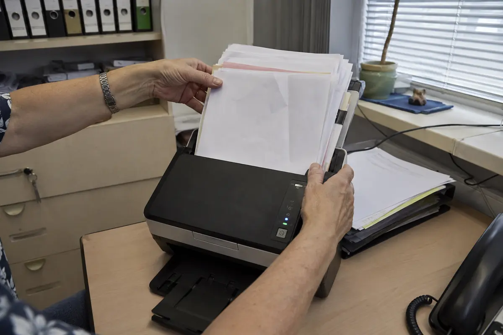

Sauber erfassen
Seiten werden vorbereitet, richtig ausgerichtet und auf Vollständigkeit sowie Lesbarkeit geprüft.
Dokumente digitalisieren · Würzburg & Mainfranken
Ich digitalisiere Akten und Geschäftsunterlagen bei Ihnen vor Ort – mit Qualitätskontrolle, Texterkennung, nachvollziehbaren Dateinamen und einer Ordnerstruktur, die zu Ihrem Betrieb passt.

Kurzantwort für Betriebe aus der Region
Sébastien Schanen bietet persönliche Dokumentendigitalisierung für Betriebe in Würzburg und Mainfranken. Die Unterlagen werden auf Wunsch vor Ort gescannt, auf Qualität geprüft, per OCR durchsuchbar gemacht, verständlich benannt und in eine passende Ordnerstruktur übergeben. Ein repräsentativer Testordner ist kostenlos und unverbindlich.
Mehr als ein Scanservice
Eine Bilddatei löst das Suchproblem nicht. Deshalb gehören Lesbarkeit, Inhaltssuche und Ordnung in einem Digitalisierungsprojekt zusammen.
Seiten werden vorbereitet, richtig ausgerichtet und auf Vollständigkeit sowie Lesbarkeit geprüft.
OCR erkennt den Text im Dokument. So lassen sich Begriffe, Nummern und Namen später im Volltext finden.
Dateinamen und Ordner beantworten die Frage, zu welchem Kunden, Vorgang, Objekt oder Jahr eine Datei gehört.
Ein konkretes Beispiel
Ein guter Name zeigt bereits vor dem Öffnen, was im Dokument steckt. OCR ergänzt diese Orientierung um die Suche im Inhalt.
Die genaue Benennung wird nicht pauschal vorgegeben. Sie richtet sich danach, wonach Ihr Team tatsächlich sucht und welche Angaben zuverlässig vorhanden sind.
Qualität in sieben Schritten
Der Umfang kann klein beginnen. Wichtig ist, dass die Regeln vor dem großen Bestand am Beispiel funktionieren.
Dokumentarten, Zustand, heutige Ablage und typische Suchwege gemeinsam ansehen.
Klammern entfernen, Reihenfolge sichern und Besonderheiten für den Scan kennzeichnen.
Unterlagen in einem passenden Format, einer sinnvollen Auflösung und der richtigen Ausrichtung erfassen.
Stichproben und definierte Prüfungen für Lesbarkeit, Vollständigkeit und korrekte Seitenfolge durchführen.
Text erkennen, damit die PDF-Dateien nicht nur angezeigt, sondern auch durchsucht werden können.
Einheitliche Dateinamen vergeben und Dokumente nach der vereinbarten Logik zuordnen.
Dateien auf der abgestimmten Zielablage bereitstellen und gemeinsam prüfen, ob Suche und Zugriff funktionieren.
Typische Unterlagen
Vom einzelnen Projektordner bis zu einem gewachsenen Archiv. Vorab prüfen wir, welche Unterlagen im Alltag, bei Rückfragen oder für die Dokumentation wirklich relevant sind.
Persönlich in der Region
Der reguläre Ablauf findet in Ihren Räumen statt. Dadurch müssen sensible Originale nicht verschickt werden und Ihr Team behält jederzeit den Überblick. Das ist besonders hilfreich, wenn Unterlagen weiterhin kurzfristig gebraucht werden oder ein gewachsenes Archiv zunächst gemeinsam verstanden werden muss.
Für Betriebe in Würzburg und Mainfranken bedeutet das: ein fester Ansprechpartner, kurze Abstimmungswege und eine Lösung, die sich an der vorhandenen Technik orientiert. Auf Wunsch kann die digitale Ablage anschließend auf einem lokalen Server, Netzlaufwerk oder einer geeigneten Nextcloud-Struktur weitergeführt werden.
Häufige Fragen
Nein. Eine Vorsortierung kann helfen, ist aber keine Voraussetzung. Zuerst wird geklärt, welche vorhandene Ordnung sinnvoll ist und an welchen Stellen Regeln fehlen.
OCR steht für Texterkennung. Sie legt über dem gescannten Bild eine durchsuchbare Textebene an. Dadurch können Sie beispielsweise nach einer Kundennummer suchen, auch wenn sie nur im Dokumenttext vorkommt.
In der Regel als durchsuchbare PDF-Dateien. Abhängig vom Zweck können weitere Anforderungen wie PDF/A, getrennte Dokumente oder eine bestimmte Benennung vereinbart werden.
Die Originale bleiben beim Vor-Ort-Ablauf in Ihrem Betrieb. Ob und wann Papier anschließend aufbewahrt oder vernichtet werden darf, sollten Sie anhand Ihrer gesetzlichen und betrieblichen Anforderungen klären; ich ersetze keine Rechts- oder Steuerberatung.
Der Aufwand hängt unter anderem von Umfang, Zustand, Sortieraufwand und gewünschter Ablage- oder Archivlösung ab. Mit dem Kostenschätzer erhalten Sie sofort eine unverbindliche Einschätzung; ein repräsentativer Testordner schafft danach die Grundlage für ein Festpreisangebot.
Sie sehen konkret, wie aus Ihren Unterlagen durchsuchbare PDFs mit verständlichen Namen und einer passenden Struktur werden.